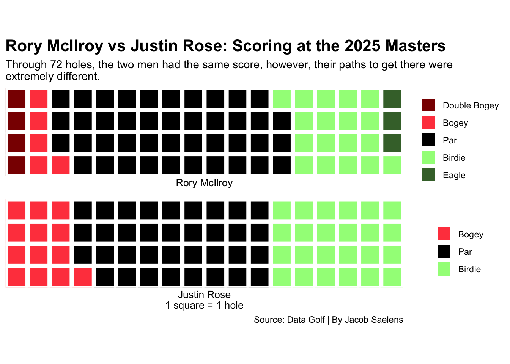
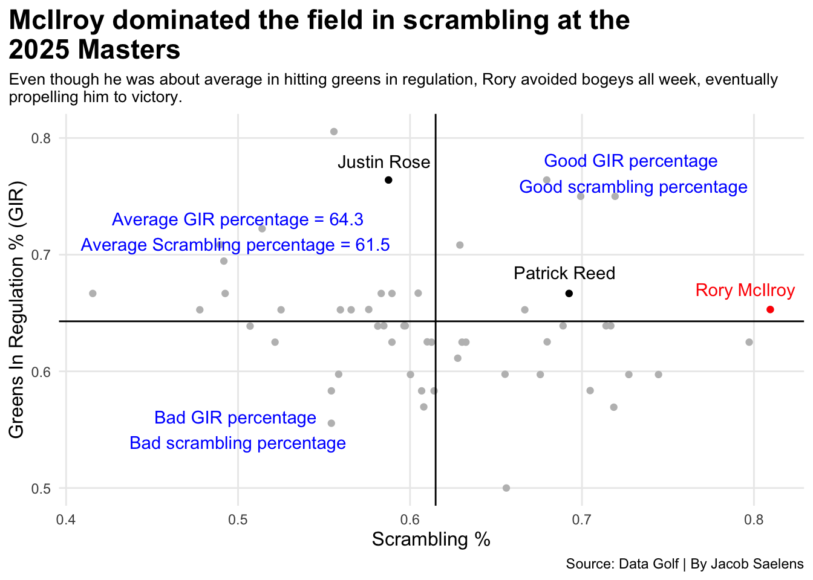

First of all, I want to give a big thanks to Will Courchene, the co-founder of Data Golf, for providing me with excellent Masters data to utilize in this post!
Golf fans around the world were filled with joy a few weeks ago on April 14th, as Rory McIlroy took home his first green jacket and completed the career grand slam as he won the 2025 Masters tournament at Augusta National Golf Course. This feat was a long time coming for McIlroy, who, in his 11th attempt, completed the career-long achievement of winning all four major championships. With the win, he becomes just the sixth player to join the career grand slam club, and the first to join since Tiger Woods in 2000.
Rory, throughout his career, has been able to win events and win them often. But, for 16 years in a row, he was unable to get the job done at the Masters. In his first 16 trips to Augusta, he had nine top 20 finishes, seven of those being in the top ten, four of those being in the top 5, and one runner-up finish in 2022. McIlroy has only missed the cut at the event three times, with two of those coming this decade in 2021 and 2023. It felt like if Rory was going to get it done, it had to be sooner rather than later before his championship window closed.
After shooting a 73 on Sunday with many ups and downs throughout the day, McIlroy found himself all knotted up with England’s Justin Rose at 11-under par, the two would head to a playoff, where McIlroy’s beautiful approach to just a couple feet helped him get a birdie, which won him the championship following Rose’s par.
Like previously mentioned, McIlroy and Rose were tied after 72 holes. However, their paths to 11-under par were vastly different. Rose had many birdies and many bogeys, and was free of suffering anything worse. On the other hand, McIlroy suffered four double bogeys, but made up for them, at least a little bit, with three eagles throughout the tournament.
Code
library(tidyverse)library(waffle)rorywin <-read_csv("2025masters.csv")wafflechart <- rorywin |>group_by (player_name) |>summarise(birdie =sum(birdies),eagle =sum(eagles_or_better),bogey =sum(bogies),double =sum (doubles_or_worse),par =sum(pars))rory <-c("Double Bogey"=4, "Bogey"=5, "Par"=42, "Birdie"=18, "Eagle"=3)rose <-c("Bogey"=13, "Par"=35, "Birdie"=24)iron(waffle(rory,rows =4,colors =c("#8B0000", "#FF474C", "black", "#A1FA88", "#426F36")) +labs(x="Rory McIlroy",title ="Rory McIlroy vs Justin Rose: Scoring at the 2025 Masters",subtitle ="Through 72 holes, the two men had the same score, however, their paths to get there were \nextremely different.") +theme(plot.title =element_text(size =16, face ="bold"),axis.title =element_text(size =10),axis.title.y =element_blank() ),waffle(rose,rows =4,colors =c("#FF474C", "black", "#A1FA88")) +labs(x ="Justin Rose\n1 square = 1 hole",caption ="Source: Data Golf | By Jacob Saelens" ))

Clearly, the two men had wildly different weeks with very similar end results. Fortunately for McIlroy, his week topped Rose’s, as he won the playoff hole with a birdie.
One thing to look at, though, is how players performed on the course as a whole. It has been well documented that Rory struggles on the greens at Augusta, which many believe is the reason why he couldn’t win the green jacket for so long. Did he put those Masters putting struggles behind him in 2025? Well, not exactly. Or, better yet, not even close. Looking at how each of the players who finished in the top ten (including ties) this year, only one of them lost strokes while on the putting surface. The answer, according to what people thought to be his weakness at this event, should not be surprising.
Code
library(tidyverse)library(ggalt)library(ggtext)rorywin <-read_csv("2025masters.csv")topplayers <-c("Rory McIlroy", "Justin Rose", "Patrick Reed", "Scottie Scheffler", "Sungjae Im", "Bryson DeChambeau", "Ludvig Aberg", "Corey Conners", "Jason Day", "Xander Schauffele", "Zach Johnson")topten <- rorywin |>filter(player_name %in% topplayers) sg <- topten |>group_by (player_name) |>summarise(puttingsg =sum(sg_putt),teetwog =sum(sg_t2g) ) |>arrange(desc(puttingsg))rory <- sg |>filter( player_name =="Rory McIlroy" )ggplot() +geom_bar(data=sg, aes(x=reorder(player_name, puttingsg), weight=puttingsg), fill ="lightgrey") +geom_bar(data=rory, aes(x=reorder(player_name, puttingsg), weight=puttingsg), fill ="red") +scale_y_continuous(breaks =c(-1:4)) +geom_text(aes(x=4, y=3.45, label="McIlroy lost 1.25 strokes \nRose gained 4.3 strokes"), color="blue") +coord_flip() +labs(x="", y="Strokes Gained: Putting", title="Rory's putting performance at Augusta National in 2025 was \npoor yet again", subtitle="Had McIlroy's putting been at least average at the Masters, he should have cruised to a victory, rather than \nneeding a playoff.", caption="Source: Data Golf | By Jacob Saelens" ) +theme_minimal() +theme(plot.title =element_text(size =17, face ="bold"),axis.title =element_text(size =12),plot.subtitle =element_text(size =10),panel.grid.minor =element_blank(),plot.title.position ="plot" )
That’s right, it was McIlroy. The 2025 Masters champion actually lost a stroke when putting, and Rose, who was the runner-up, gained over four strokes on the putting surface.
So, the question now is, how did Rory do it? Surely, he must have outperformed the field elsewhere. Not only did he do that, he crushed the entire field in strokes gained: tee to green. This is everything excluding putting. Just how good was he from everywhere else?
Code
library(tidyverse)library(ggalt)library(ggtext)rorywin <-read_csv("2025masters.csv")topplayers <-c("Rory McIlroy", "Justin Rose", "Patrick Reed", "Scottie Scheffler", "Sungjae Im", "Bryson DeChambeau", "Ludvig Aberg", "Corey Conners", "Jason Day", "Xander Schauffele", "Zach Johnson")topten <- rorywin |>filter(player_name %in% topplayers) sg <- topten |>group_by (player_name) |>summarise(puttingsg =sum(sg_putt),teetwog =sum(sg_t2g) ) |>arrange(desc(puttingsg))rory <- sg |>filter( player_name =="Rory McIlroy" )ggplot() +geom_bar(data=sg, aes(x=reorder(player_name, teetwog), weight=teetwog), fill ="lightgrey") +geom_bar(data=rory, aes(x=reorder(player_name, teetwog), weight=teetwog), fill ="red") +geom_text(aes(x=4, y=11, label="McIlroy gained 14.97 strokes \nRose gained 9.42 strokes"), color="blue") +coord_flip() +labs(x="", y="Strokes Gained: Tee to Green", title="McIlroy's performance at Augusta, excluding putting, was \nexceptional", subtitle="The 'strokes gained: tee to green' numbers prove exactly why Rory is one of the best golfers all time, and it \nwas only a matter of time until he got the job done at Augusta National.", caption="Source: Data Golf | By Jacob Saelens" ) +theme_minimal() +theme(plot.title =element_text(size =17, face ="bold"),axis.title =element_text(size =12),plot.subtitle =element_text(size =10),panel.grid.minor =element_blank(),plot.title.position ="plot" )
Just like that, it is easy to see that Rory didn’t win because of putting, in fact, he just about lost the tournament because of it. Everywhere else, though, he was phenomenal, gaining just under 15 strokes.
This also puts in to perspective just how different Rory and Rose’s weeks were. Rose was in the top three of each of the strokes gained statistics listed above, whereas Rory was first in one by a mile, and last in the other by a mile.
What if I told you that McIlroy’s putting performance could have been a lot worse? It may be hard to believe, but it is absolutely true. Poor putting is typically going to rack up many more bogeys or worse, but after looking at the previous visuals, McIlroy only had nine holes where he made bogey or worse.
Looking at his scrambling, his ability to save par was better everyone else in the field this year, which is a very good stat to be leading in if you want to win tournaments, especially when the whole world knows that those putts for pars can and will make or break you.
The following graph displays only players who made the cut in 2025
Code
library(tidyverse)masters25 <-read_csv("2025masters.csv")scatter25 <- masters25 |>group_by (player_name) |>summarise(scramble =mean(scrambling),gir =mean(gir) ) |>arrange(desc(scramble))rory <- scatter25 |>filter(player_name =="Rory McIlroy")rose <- scatter25 |>filter(player_name =="Justin Rose")reed <- scatter25 |>filter(player_name =="Patrick Reed")ggplot() +geom_point(data=scatter25, aes(x=scramble, y=gir), color ="grey") +geom_point(data=rory, aes(x=scramble, y=gir), color ="red") +geom_point(data=rose, aes(x=scramble, y=gir), color ="black") +geom_point(data=reed, aes(x=scramble, y=gir), color ="black")+geom_vline(xintercept =0.6148915) +geom_hline(yintercept =0.6428726) +geom_text(aes(x=.795, y=.67, label="Rory McIlroy"), color="red") +geom_text(aes(x=.585, y=.78, label="Justin Rose"), color="black") +geom_text(aes(x=.690, y=.685, label="Patrick Reed"), color="black")+geom_text(aes(x=.5, y=.55, label="Bad GIR percentage \nBad scrambling percentage"), color="blue") +geom_text(aes(x=.73, y=.77, label="Good GIR percentage \nGood scrambling percentage"), color="blue") +geom_text(aes(x=.5, y=.72, label="Average GIR percentage = 64.3\nAverage Scrambling percentage = 61.5 "), color="blue") +labs(x="Scrambling %", y="Greens In Regulation % (GIR)", title="McIlroy dominated the field in scrambling at the \n2025 Masters", subtitle="Even though he was about average in hitting greens in regulation, Rory avoided bogeys all week, eventually \npropelling him to victory.", caption="Source: Data Golf | By Jacob Saelens" ) +theme_minimal() +theme(plot.title =element_text(size =17, face ="bold"),axis.title =element_text(size =12),plot.subtitle =element_text(size =10),panel.grid.minor =element_blank(),plot.title.position ="plot" )

Scrambling certainly proved to be a major factor in McIlroy’s historic victory. With that being said, McIlroy has had years where his scrambling may have cost him the green jacket. In 2022, he finished as the runner-up to Scottie Scheffler, who won his first green jacket. Scottie finished in the top six of each of the scrambling and greens in regulation statistics, which ultimately forced Rory to wait on his first Masters title. Even though McIlroy was much better at finding greens in regulation in 2022, Scottie’s superb scrambling led him to victory.
The following graph displays only players who made the cut in 2022
Code
library(tidyverse)masters22 <-read_csv("2022masters.csv")scatter22 <- masters22 |>group_by (player_name) |>summarise(scramble =mean(scrambling),gir=mean(gir))|>arrange(desc(gir))scottie <- scatter22 |>filter(player_name =="Scheffler, Scottie")rory22 <- scatter22 |>filter(player_name =="McIlroy, Rory")cam <- scatter22 |>filter(player_name =="Smith, Cameron")shane <- scatter22 |>filter(player_name =="Lowry, Shane") ggplot() +geom_point(data=scatter22, aes(x=scramble, y=gir), color ="grey") +geom_point(data=rory22, aes(x=scramble, y=gir), color ="red") +geom_point(data=scottie, aes(x=scramble, y=gir), color ="black") +geom_point(data=cam, aes(x=scramble, y=gir), color ="black") +geom_point(data=shane, aes(x=scramble, y=gir), color ="black") +geom_vline(xintercept =0.5865288) +geom_hline(yintercept =0.6015577) +geom_text(aes(x=.618, y=.705, label="Rory McIlroy"), color="red") +geom_text(aes(x=.711, y=.65, label="Shane Lowry"), color="black") +geom_text(aes(x=.708, y=.692, label="Scottie Scheffler"), color="black")+geom_text(aes(x=.537, y=.664, label="Cameron Smith"), color="black") +geom_text(aes(x=.44, y=.565, label="Bad GIR percentage \nBad scrambling percentage"), color="blue") +geom_text(aes(x=.67, y=.62, label="Good GIR percentage \nGood scrambling percentage"), color="blue") +geom_text(aes(x=.428, y=.69, label="Average GIR percentage = 60.2\nAverage Scrambling percentage = 58.7 "), color="blue") +labs(x="Scrambling %", y="Greens In Regulation % (GIR)", title="Rory's green in regulation numbers were amongst the \nbest in the 2022 Masters, but Scottie's week was better", subtitle="Scottie Scheffler finished in the top six of both statistics, while McIlroy didn't crack the top 20 in scrambling. \nScheffler beat McIlroy by three strokes.", caption="Source: Data Golf | By Jacob Saelens" ) +theme_minimal() +theme(plot.title =element_text(size =17, face ="bold"),axis.title =element_text(size =12),plot.subtitle =element_text(size =10),panel.grid.minor =element_blank(),plot.title.position ="plot" )
Simply put, those who can scramble exceptionally well at Augusta tend to do well. Rory’s performance in 2025 proved just that, as well as the fact that the common phrase “drive for show, putt for dough,” isn’t always the case, especially when it comes to the most anticipated golf tournament of the year. It will be interesting to see who comes out on top in years to come and if they continue to scramble well, even if their putting isn’t exactly amazing that week.